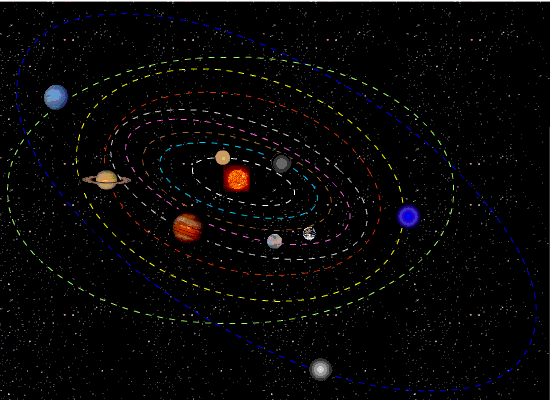
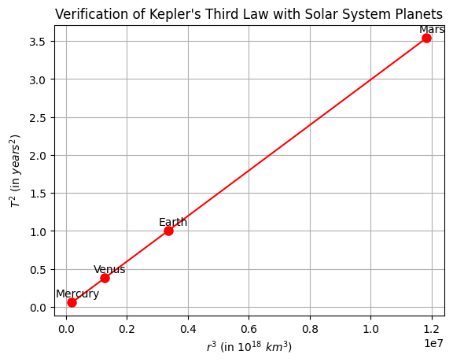
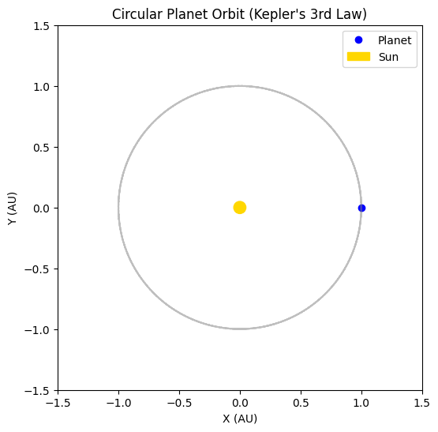

Gravity

Problem 1: Orbital Period and Orbital Radius
Motivation
The relationship between the square of the orbital period and the cube of the orbital radius, known as Kepler's Third Law, is a cornerstone of celestial mechanics.
- It connects orbital dynamics to gravitational forces
- Crucial for:
- Determining planetary motion
- Designing satellite trajectories
- Estimating masses of celestial objects
Task
- Derive the relationship between:
- Orbital period \(T\)
- Orbital radius \(r\)
- Use Newton's Law of Gravitation and centripetal force
- Apply the law to real-world cases like:
- Moon's orbit around Earth
- Planets in the Solar System
- Simulate circular orbits to verify the relation
Derivation
Step 1: Newton's Law of Universal Gravitation
\[F_g = \frac{GMm}{r^2}\]
Step 2: Centripetal Force Required for Circular Motion
\[F_c = \frac{mv^2}{r}\]
Equating gravitational force and centripetal force:
\[\frac{GMm}{r^2} = \frac{mv^2}{r}\]
Cancel \(m\) and rearrange:
\[v^2 = \frac{GM}{r}\]
Step 3: Express velocity in terms of period \(T\)
Orbital speed \(v = \frac{2\pi r}{T}\)
Substitute into the equation:
\[\left(\frac{2\pi r}{T}\right)^2 = \frac{GM}{r}\]
Expand and simplify:
\[\frac{4\pi^2 r^2}{T^2} = \frac{GM}{r}\]
Multiply both sides by \(T^2 r\):
\[4\pi^2 r^3 = GMT^2\]
Finally:
\[T^2 = \frac{4\pi^2}{GM} r^3\]
Implications
- Kepler's Third Law: \(T^2 \propto r^3\)
- This relation:
- Helps determine the mass of the central object
- Predicts motion of satellites and moons
- Useful for astro-navigation and space missions
Real-World Example: The Moon
- Mass of Earth: \(M = 5.97 \times 10^{24}\) kg
- Radius of Moon's orbit: \(r = 3.84 \times 10^8\) m
Using:
\[T = 2\pi \sqrt{\frac{r^3}{GM}}\]
Python Simulation

import numpy as np
import matplotlib.pyplot as plt
import pandas as pd
planets = {
'Mercury': {'r': 57.9e6, 'T': 0.241},
'Venus': {'r': 108.2e6, 'T': 0.615},
'Earth': {'r': 149.6e6, 'T': 1.000},
'Mars': {'r': 227.9e6, 'T': 1.881}
}
data = {
'Planet': [],
'r (10^6 km)': [],
'T (years)': [],
'r³ (10^18 km³)': [],
'T² (years²)': []
}
for name, values in planets.items():
r = values['r']
T = values['T']
data['Planet'].append(name)
data['r (10^6 km)'].append(r)
data['T (years)'].append(T)
data['r³ (10^18 km³)'].append((r**3) / 1e18)
data['T² (years²)'].append(T**2)
df = pd.DataFrame(data)
print(df)
plt.plot(df['r³ (10^18 km³)'], df['T² (years²)'], 'ro-', markersize=8)
for i, txt in enumerate(df['Planet']):
plt.annotate(txt, (df['r³ (10^18 km³)'][i], df['T² (years²)'][i]), textcoords="offset points", xytext=(5,5), ha='center')
plt.xlabel(r'$r^3$ (in $10^{18}\ km^3$)')
plt.ylabel(r'$T^2$ (in $years^2$)')
plt.title('Verification of Kepler\'s Third Law with Solar System Planets')
plt.grid(True)
plt.show()

import numpy as np
import matplotlib.pyplot as plt
from matplotlib.animation import FuncAnimation
# Orbital parameters (in astronomical units and years)
radius = 1 # Orbital radius in AU
period = 1 # Orbital period in years
omega = 2 * np.pi / period # Angular velocity (rad/year)
# Time array (convert years to days)
t = np.linspace(0, period, 360)
x = radius * np.cos(omega * t * 365) # X-position over time
y = radius * np.sin(omega * t * 365) # Y-position over time
# Set up the figure and axis
fig, ax = plt.subplots(figsize=(6, 6))
ax.set_aspect('equal')
ax.set_xlim(-1.5, 1.5)
ax.set_ylim(-1.5, 1.5)
ax.set_title("Circular Planet Orbit (Kepler's 3rd Law)")
ax.set_xlabel("X (AU)")
ax.set_ylabel("Y (AU)")
# Draw the Sun and initialize the planet
sun = plt.Circle((0, 0), 0.05, color='gold', label='Sun')
planet, = plt.plot([], [], 'o', color='blue', label='Planet')
orbit, = plt.plot(x, y, linestyle='dotted', color='gray', alpha=0.5)
# Add the Sun to the plot
ax.add_artist(sun)
ax.legend(loc="upper right")
# Animation update function
def update(frame):
# Modified to provide sequences to set_data
planet.set_data([x[frame]], [y[frame]])
return planet,
# Create animation
ani = FuncAnimation(fig, update, frames=len(t), interval=30, blit=True)
plt.show()